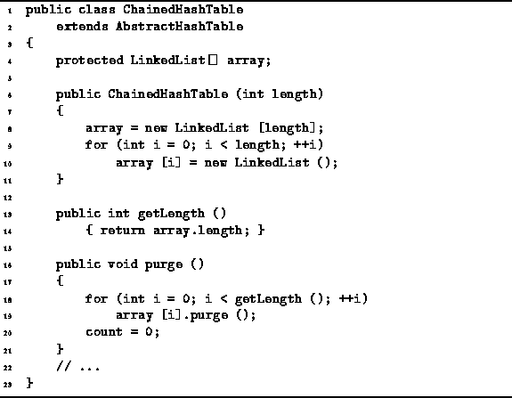

Data Structures and Algorithms
with Object-Oriented Design Patterns in Java
Data Structures and Algorithms
with Object-Oriented Design Patterns in Java
The constructor, getLength and purge methods
of the ChainedHashTable class
are defined in Program  .
The constructor takes a single argument
which specifies the size of hash table desired.
It creates an array of the specified length
and then initializes the elements of the array.
Each element of the array is assigned an empty linked list.
The running time for the ChainedHashTable
constructor is O(M) where M is the size of the hash table.
.
The constructor takes a single argument
which specifies the size of hash table desired.
It creates an array of the specified length
and then initializes the elements of the array.
Each element of the array is assigned an empty linked list.
The running time for the ChainedHashTable
constructor is O(M) where M is the size of the hash table.

Program: ChainedHashTable class constructor, getLength, and purge methods.
The getLength method simply returns the length of the array field. Clearly its running time is O(1)
The purpose of the purge method is to make the container empty. It does this by invoking the purge method one-by-one on each of the linked lists in the array. The running time of the purge method is O(M), where M is the size of the hash table.
 Copyright © 1998 by Bruno R. Preiss, P.Eng. All rights reserved.
Copyright © 1998 by Bruno R. Preiss, P.Eng. All rights reserved.